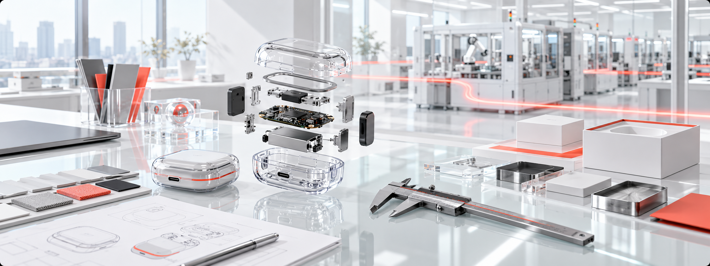

Partnership Services
Core Services: An integrated cooperation framework from brand licensing to factory coordination.
AIWA Electronics International Co., Ltd. gives partners a clear path from market opportunity to product proposal. Local partners bring market insight and commercial leadership, while the Taiwan headquarters coordinates brand licensing, factory collaboration, product direction, and ESG requirements through one operating framework. This model provides a single coordination point, access to suitable manufacturing resources, and clearer review milestones while preserving consistent global brand governance and local market flexibility.

Licensing Model
Partner-led markets, headquarters-led standards.
Local partners understand their sales channels and market needs. AIWA provides the brand licensing framework, manufacturing coordination options, and final standards control.
Factory Partnerships
Factory Partnerships: Flexible collaboration, aligned with AIWA brand standards.
Authorized partners may recommend suitable manufacturing partners or explore qualified resources coordinated by AIWA. Every proposal is reviewed for product fit, documentation, sample approval, manufacturing capability, and final brand approval.